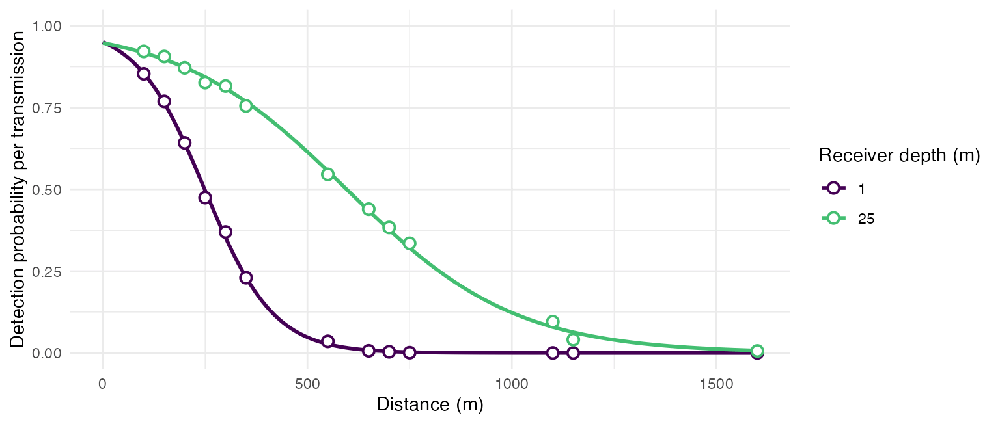
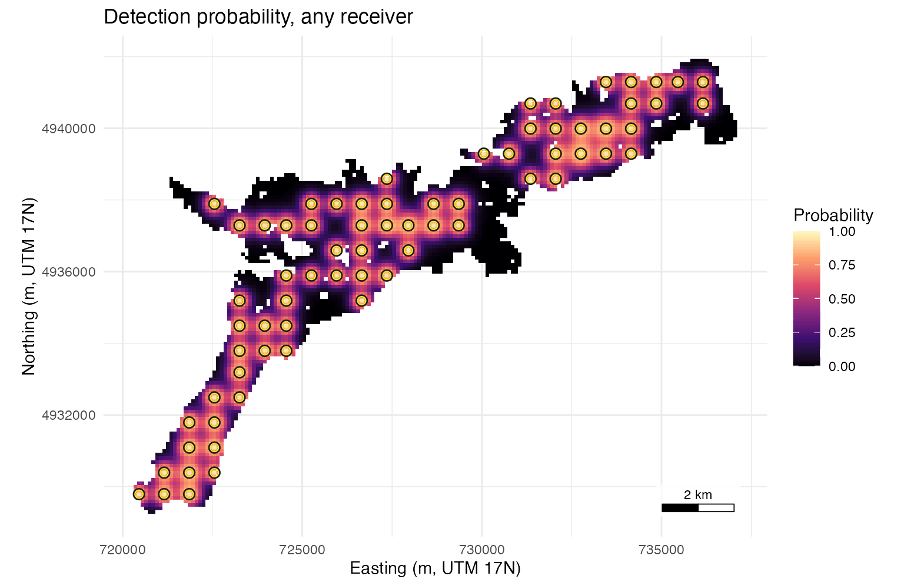
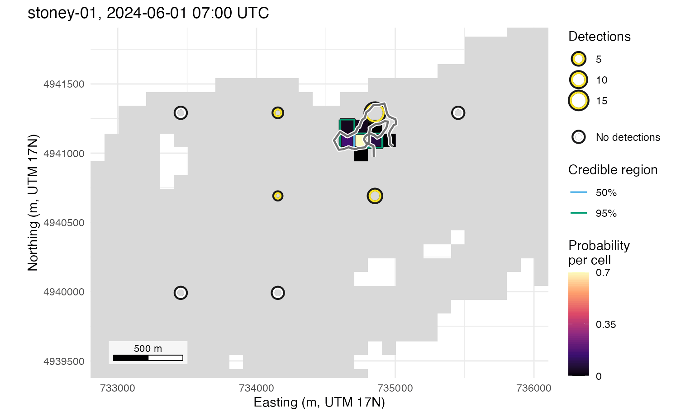
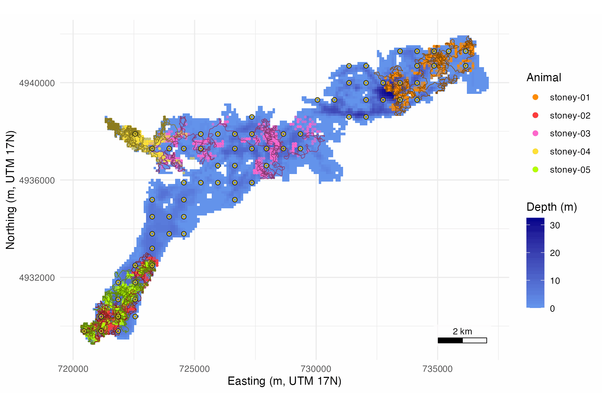

detfield turns the detections of a fixed receiver array into hourly location surfaces: for each tagged animal and hour, the probability that it was in each water cell. It reads the range model you fitted to your range test, measures distances through water round points and islands, and builds a detection field that gives every receiver a probability of hearing a transmission from every cell. The surfaces then use every listening receiver, the silent ones included. This page runs the whole chain on the Stoney Lake example included with the package: a range test, 70 receivers on a 100 m raster, and five simulated animals with known tracks over 48 hours from 1 June 2024.
Four articles go further. Range models: bring your own, or start from two distances takes a range model that varies with depth and date into a field for each day. Hourly positions against the true track scores the surfaces against the simulated tracks, from the hourly error to the use map. Habitat selection: depth use from hourly positions draws availability points and compares the depth coefficient from positions with the one from the true tracks. Position fish from a cleaned detection set hands a cleaned detection set from the detqc R package to detfield.
1. Read the range test and count it
A range test is three files: the receivers, the range-test tags with their positions and delays, and the detections. Serial numbers are read as text, so that leading zeros survive.
# Attach detfield, and ggplot2 for the figures
library(detfield)
library(ggplot2)
# Find a file included with the package
in_file <- function(name) system.file("extdata", name, package = "detfield")
serial_text <- c(receiver_serial = "character")
# Read the three range-test files and count their rows
rt_detections <- read.csv(in_file("stoney_range_test_detections.csv"),
colClasses = serial_text)
rt_receivers <- read.csv(in_file("stoney_range_test_receivers.csv"),
colClasses = serial_text)
rt_tags <- read.csv(in_file("stoney_range_test_tags.csv"))
c(detections = nrow(rt_detections), receivers = nrow(rt_receivers),
tags = nrow(rt_tags))
#> detections receivers tags
#> 14281 6 10The times are text in the files; detfield takes them as date-times in UTC:
# Convert detection, deployment and recovery times to UTC date-times
rt_detections$datetime <- as.POSIXct(rt_detections$datetime, tz = "UTC")
for (col in c("deploy_datetime", "recover_datetime")) {
rt_receivers[[col]] <- as.POSIXct(rt_receivers[[col]], tz = "UTC")
rt_tags[[col]] <- as.POSIXct(rt_tags[[col]], tz = "UTC")
}
range(rt_detections$datetime)
#> [1] "2024-05-19 23:50:01 UTC" "2024-05-25 00:09:54 UTC"range_test_counts() returns one row per receiver, tag
and whole hour in which both were in the water: the transmissions sent,
the detections heard, the distance and the receiver depth. Hours in
which a receiver heard nothing from a tag stay in, with
heard = 0.
# Count transmissions sent and heard per receiver, tag and hour
range_test <- range_test_counts(rt_detections, rt_receivers, rt_tags)
#> 121 of 14,281 detections are not counted: other transmitters or
#> receivers, or bins a deployment covers only in part.
#> 2 of 1,440 rows had more detections than the delay allows
#> transmissions; `sent` was raised to the count in those rows.
head(range_test[, c("datetime", "depth_m", "distance_m", "sent", "heard")])
#> datetime depth_m distance_m sent heard
#> 1 2024-05-20 1 150 24 17
#> 2 2024-05-20 1 350 24 9
#> 3 2024-05-20 1 650 24 1
#> 4 2024-05-20 1 1100 24 0
#> 5 2024-05-20 1 1600 24 0
#> 6 2024-05-20 1 300 24 6
# Count the rows per receiver depth (m) and distance (m)
table(range_test$depth_m, range_test$distance_m)
#>
#> 100 150 200 250 300 350 550 650 700 750 1100 1150 1600
#> 1 48 48 96 48 48 48 48 96 48 48 48 48 48
#> 25 48 48 96 48 48 48 48 96 48 48 48 48 482. Fit the range model
detfield never fits a range model; it reads yours. The range model here is a logistic regression of the transmissions heard on distance, receiver depth and their interaction, so that a deeper receiver hears further. Its Pearson dispersion measures spread beyond the binomial:
# Fit a binomial GLM of heard out of sent on distance and receiver depth
fit <- glm(cbind(heard, sent - heard) ~ distance_m * depth_m,
family = binomial, data = range_test)
# Compute the Pearson dispersion: near 1 means no spread beyond the binomial
dispersion <- sum(residuals(fit, type = "pearson")^2) / df.residual(fit)
dispersion
#> [1] 0.861846A dispersion of 0.86 is consistent with no variation between
receivers or hours beyond binomial chance, so the model below takes the
spread as 0. de_model() wraps the fit with that spread:
# Wrap the fitted model with a spread of 0
model <- de_model(fit, sigma = list(station_hour = 0))
model
#> <de_model> glm, cbind(heard, sent - heard) ~ distance_m * depth_m
#> reads: distance_m, depth_m
#> sigma: station_hour 0 logits
#> blocked line of sight: curve read at the distance through water
# Predict the fitted curve every 10 m at the two tested depths
curves <- expand.grid(distance_m = seq(0, 1600, by = 10), depth_m = c(1, 25))
curves$p <- plogis(model$predict(curves$distance_m, depth_m = curves$depth_m))
# Pool the share heard at each depth and distance over hours
pooled <- aggregate(cbind(heard, sent) ~ depth_m + distance_m,
data = range_test, FUN = sum)
# Plot the curves over the pooled shares
ggplot(curves, aes(distance_m, p, colour = factor(depth_m))) +
geom_line(linewidth = 1) +
geom_point(data = pooled, aes(y = heard / sent), shape = 21,
fill = "white", size = 2.4, stroke = 1) +
scale_colour_viridis_d(name = "Receiver depth (m)", end = 0.7) +
scale_y_continuous(limits = c(0, 1)) +
labs(x = "Distance (m)", y = "Detection probability per transmission") +
theme_positionr()
The fitted model (lines) over the share of transmissions heard at each distance (open points), pooled over the 48 hours the test ran at each depth.
A study with tag models, changing conditions or receiver effects fits a richer model; Range models: bring your own, or start from two distances takes one with depth and date into a field for each day.
3. Build the detection field
The field needs the lake raster, with land as NA, and
the receiver deployments:
# Read the depth raster of the lake
lake <- terra::rast(in_file("stoney_depth.tif"))
# Read the receiver deployments and convert their times to UTC
deployments <- read.csv(in_file("stoney_deployments.csv"),
colClasses = serial_text)
for (col in c("deploy_datetime", "recover_datetime")) {
deployments[[col]] <- as.POSIXct(deployments[[col]], tz = "UTC")
}
nrow(deployments)
#> [1] 70water_distances() measures the distance through water
from each receiver to each water cell, going round land. It reads the
receiver positions from deploy_lat and
deploy_lon.
# Measure the distance through water from each receiver to each water cell
distances <- water_distances(lake, deployments)
distances
#> <water_distances> 337,190 pairs: 70 receivers (by station_id) x 4,818
#> water cells
#> Straight line used for 92,798 of 337,190 pairs; longest distance 20,201
#> m
#> cell station_id distance_m straight_m in_water
#> 1 156 S001 19676.30 19584.93 FALSE
#> 2 157 S001 19758.41 19663.66 FALSE
#> 3 158 S001 19841.75 19742.58 FALSE
#> 4 159 S001 19925.31 19821.69 FALSE
#> 5 160 S001 20009.33 19900.99 FALSE
#> 6 321 S001 19403.15 19287.55 FALSEde_field() reads the model at each distance and at each
receiver’s own depth, deploy_z:
# Compute the detection probability per receiver and water cell
field <- de_field(distances, model)
#> 113 of 6,046 receiver-cell pairs with p >= 0.05 have land on the
#> straight line between them; with blocked = 0 the curve is read on
#> them as if the line were clear. See `blocked` in ?de_model.
field
#> <de_field> 4,818 water cells x 70 receivers (by station_id)
#> model: glm, cbind(heard, sent - heard) ~ distance_m * depth_m
#> blocked line of sight: 244,392 of 337,190 pairs, curve read at the
#> distance through water
#> cells with p >= 0.05 per receiver: median 83.5, range 35 to 191plot() maps the probability that at least one receiver
detects a transmission from each cell:
# Map the field: the probability that any receiver detects a transmission
plot(field)
Probability that at least one of the 70 receivers (rings) detects one transmission from each of the 4,818 water cells.
4. Compute the hourly location surfaces
The animals’ detections and their tags are two more files:
# Read the detections and convert their times to UTC
detections <- read.csv(in_file("stoney_detections.csv"),
colClasses = serial_text)
detections$datetime <- as.POSIXct(detections$datetime, tz = "UTC")
# Read the tags and their delays
tags <- read.csv(in_file("stoney_tags.csv"))
tags
#> transmitter animal_id min_delay max_delay
#> 1 A69-9001-1001 stoney-01 120 180
#> 2 A69-9001-1002 stoney-02 120 180
#> 3 A69-9001-1003 stoney-03 120 180
#> 4 A69-9001-1004 stoney-04 120 180
#> 5 A69-9001-1005 stoney-05 120 180bin_detections() counts, for each animal and hour with a
detection, the detections at every receiver that was listening, the
silent ones included, and the transmissions the tag sent
(n, from its delay):
# Count detections per animal, hour and listening receiver
counts <- bin_detections(detections, deployments, tags)
head(counts[counts$y > 0, c("animal_id", "bin_start", "station_id", "y", "n")])
#> animal_id bin_start station_id y n
#> 64 stoney-01 2024-06-01 04:00:00 S064 5 24
#> 134 stoney-01 2024-06-01 05:00:00 S064 7 24
#> 138 stoney-01 2024-06-01 05:00:00 S068 13 24
#> 139 stoney-01 2024-06-01 05:00:00 S069 3 24
#> 204 stoney-01 2024-06-01 06:00:00 S064 6 24
#> 208 stoney-01 2024-06-01 06:00:00 S068 7 24
# Count the detected hours per animal
table(unique(counts[c("animal_id", "bin_start")])$animal_id)
#>
#> stoney-01 stoney-02 stoney-03 stoney-04 stoney-05
#> 43 48 44 29 48location_surface() computes, for each animal and
detected hour, the probability that the animal was in each water cell,
from the counts at every listening receiver. Each hour is computed on
its own, with no movement model linking hours (the model).
# Compute one surface per animal and detected hour
surface <- location_surface(counts, field)
surface
#> Location surface: 5 animals, 212 bins, 5,351 cells kept in all
#> Cells kept per bin: median 15 of 4,818 water cells (range 6 to 232)
#> Likelihood: binomial (detections and misses at every listening
#> receiver)
#> Spread: none (overdispersion = "none")
#> Each bin keeps the smallest set of cells holding 0.999 of its
#> probability
#> Misfit: 20 of 212 bins have a detecting receiver whose count the
#> surface gives a chance below 0.01
#> Near: 53 of 212 bins put under 0.001 of their probability within 223.6
#> to 360.6 m of the receiver with the most detections (per receiver,
#> its farthest cell centre at p >= 0.5)
#> Modes sit a median 316 m (max 608 m) from the nearest detecting
#> receiver, over 212 bins
#> animal_id bin_start cell prob
#> 1 stoney-01 2024-06-01 04:00:00 2835 0.10069614
#> 2 stoney-01 2024-06-01 04:00:00 2669 0.09999866
#> 3 stoney-01 2024-06-01 04:00:00 2334 0.09408616
#> 4 stoney-01 2024-06-01 04:00:00 2834 0.08655921
#> 5 stoney-01 2024-06-01 04:00:00 2668 0.07585585
#> 6 stoney-01 2024-06-01 04:00:00 2501 0.07422958The print gives the cells kept per hour, the hours whose counts no
single cell explains (Misfit), and the hours placed on a
ring away from the receiver that heard most (Near), which
happens when an hour is heard mostly by one receiver. In the hour from
07:00 UTC on 1 June 2024, four receivers heard stoney-01.
Its surface for that hour is drawn with its true path from the
simulation:
# Select the counts, at the receivers that heard it, from 07:00 UTC
hour_start <- as.POSIXct("2024-06-01 07:00:00", tz = "UTC")
hour_counts <- counts[counts$animal_id == "stoney-01" &
counts$bin_start == hour_start, ]
hour_counts[hour_counts$y > 0, c("station_id", "y", "n")]
#> station_id y n
#> 273 S063 1 24
#> 274 S064 6 24
#> 277 S067 2 24
#> 278 S068 18 24
# Select the true path of the hour, one position a minute
true_path <- stoney_track$track
true_path <- true_path[true_path$animal_id == "stoney-01" &
true_path$datetime >= hour_start &
true_path$datetime <= hour_start + 3600, ]
nrow(true_path)
#> [1] 61
# Map the surface, with the true path drawn on a white edge
plot(surface, animal_id = "stoney-01", bin_start = hour_start) +
geom_path(data = true_path, aes(x, y), colour = "white", linewidth = 1.6,
inherit.aes = FALSE) +
geom_path(data = true_path, aes(x, y), colour = "grey45", linewidth = 0.8,
inherit.aes = FALSE)
Location surface of stoney-01 for 07:00 to 08:00 UTC
on 1 June 2024, with the true path of the hour (line, one position a
minute).
The surface lies where the four ranges meet, pulled away from the silent receivers round it. Hourly positions against the true track shows every hour of one animal this way and scores all five against their tracks.
5. Summarise with credible regions and draws
credible_region() returns each hour’s smallest set of
cells holding 95% of the probability, with its area:
# Find the 95% region of every hour, and its area
regions <- credible_region(surface, level = 0.95)
region_areas <- attr(regions, "summary")
# Compute the median area of the 95% region per animal, in ha
aggregate(list(median_ha = region_areas$area_m2 / 1e4),
by = region_areas["animal_id"], FUN = function(ha) round(median(ha)))
#> animal_id median_ha
#> 1 stoney-01 6
#> 2 stoney-02 5
#> 3 stoney-03 14
#> 4 stoney-04 20
#> 5 stoney-05 6sample_locations() draws cells from each surface in
proportion to their probability, for analyses that take points, such as
habitat selection. The draws describe the hours in which the animal was
detected, and only those.
# Draw 20 cells per detected hour in proportion to probability
draws <- sample_locations(surface, n = 20, seed = 1)
head(draws, 3)
#> animal_id bin_start draw cell x y
#> 1 stoney-01 2024-06-01 04:00:00 1 2501 735154 4940491
#> 2 stoney-01 2024-06-01 04:00:00 2 2502 735254 4940491
#> 3 stoney-01 2024-06-01 04:00:00 3 2669 735154 4940391
attr(draws, "estimand")
#> [1] "location of the animal in each detected bin"
# Turn depth to metres below the surface (the raster stores it as negative)
depth_cells <- terra::as.data.frame(abs(lake), xy = TRUE)
names(depth_cells)[3] <- "depth_m"
# Warm colours, which read on the blue depth ramp, one per animal; each
# track is a darker shade of its animal's colour, so it can be followed
# through its own draws
animals <- sort(unique(draws$animal_id))
draw_colours <- setNames(c("#FF8C00", "#FF3B3B", "#FF66CC", "#FFE135",
"#B3FF00"), animals)
track_colours <- grDevices::rgb(t(grDevices::col2rgb(draw_colours)) * 0.55,
maxColorValue = 255)
names(track_colours) <- animals
# Draw each animal's track thin, in its own dark shade
track_layers <- lapply(animals, function(a) {
geom_path(data = stoney_track$track[stoney_track$track$animal_id == a, ],
colour = track_colours[[a]], linewidth = 0.25)
})
# Map the depth, the draws, the tracks over them, then the receivers
ggplot(depth_cells, aes(x, y)) +
geom_raster(aes(fill = depth_m)) +
scale_fill_depth() +
geom_point(data = draws, aes(colour = animal_id), alpha = 0.6, size = 1.3,
stroke = 0) +
scale_colour_manual(name = "Animal", values = draw_colours) +
guides(colour = guide_legend(override.aes = list(alpha = 1, size = 2.6))) +
track_layers +
layer_receivers(attr(distances, "receivers"), size = 1.2,
stroke = 0.45) +
coord_equal() +
labs(x = "Easting (m, UTM 17N)", y = "Northing (m, UTM 17N)") +
annotation_scale_bar(location = "br") +
theme_positionr()
Positions of the five simulated animals over 1 and 2 June 2024: 20 cells drawn from each detected hour’s surface (4,240 draws, many on the same cell), with the true tracks (lines, one position a minute) and the 70 receivers (rings).
Most of each animal’s draws sit along its own track. The draws of single-receiver hours sit on arcs round the receiver that heard the animal, some of them away from the track, as in the north-west arm, the north-east basin and the middle basin. Hourly positions against the true track scores the positions and writes draws like these to files for other packages.